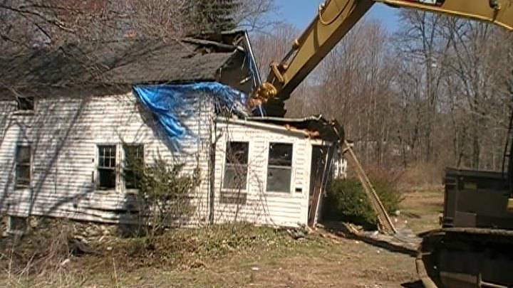
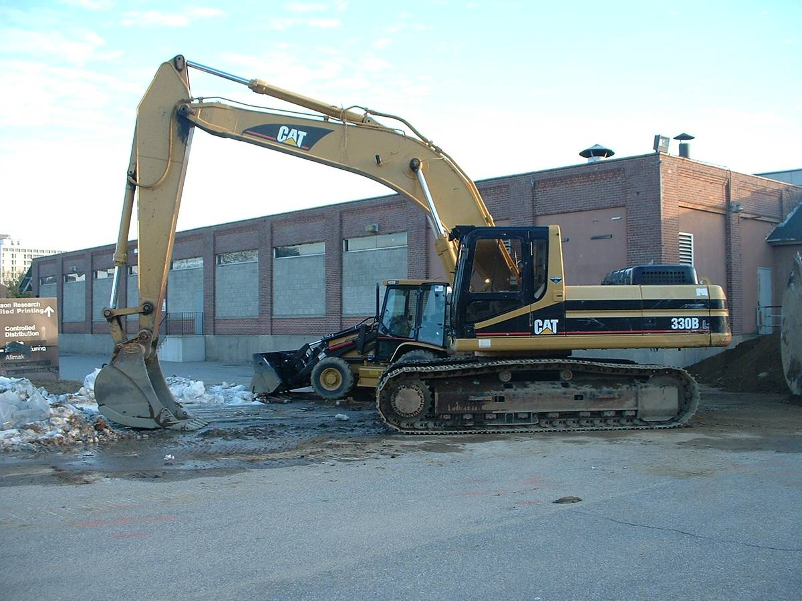
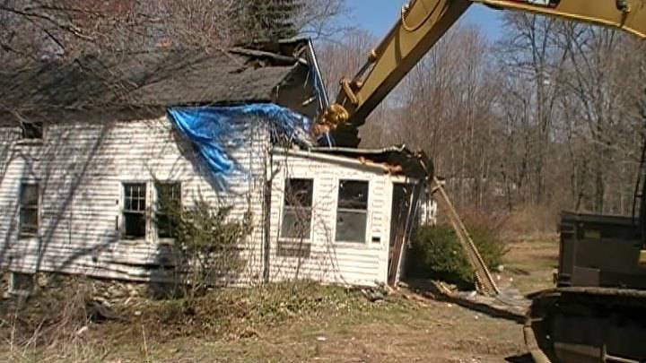
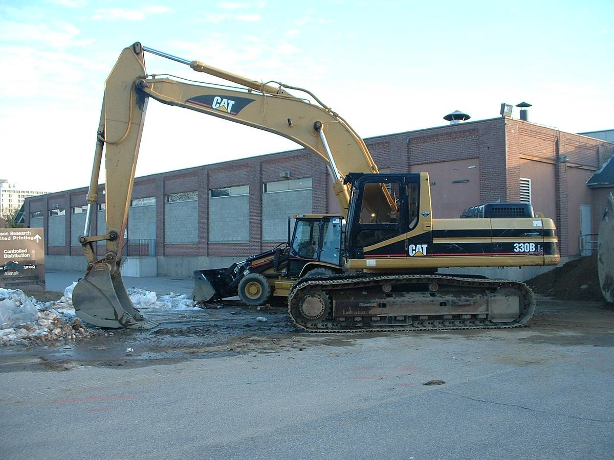

About
JT Lipovsky Excavation Family owned and operated in Shelton, Connecticut for over 45 years. There is no job too big or small. Free Estimates!
JT Lipovsky Excavation provides reliable and competitive services for our customers at fair prices in Coastal Fairfield County Connecticut. We provide a full range of services from Site Excavation to Home Construction.
Services

 



- Excavation
- Home construction & additions
- Home Demolition
- Land clearing & site development
- Tree removal & wood chipping
- Stump grinding & removal
- Digging of foundations
- Sewer & water lines
- Storm drainage
- Underground utilities
- Overweight hauling & transport
- ... and more!
Contact